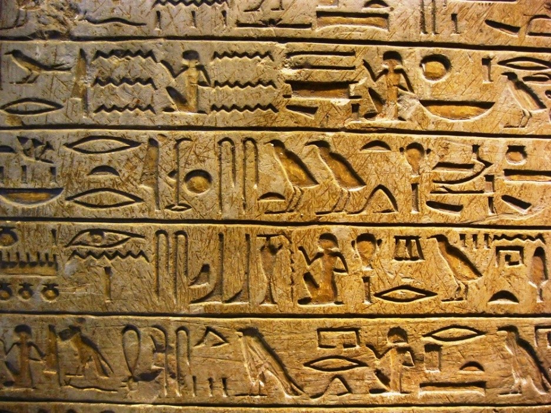
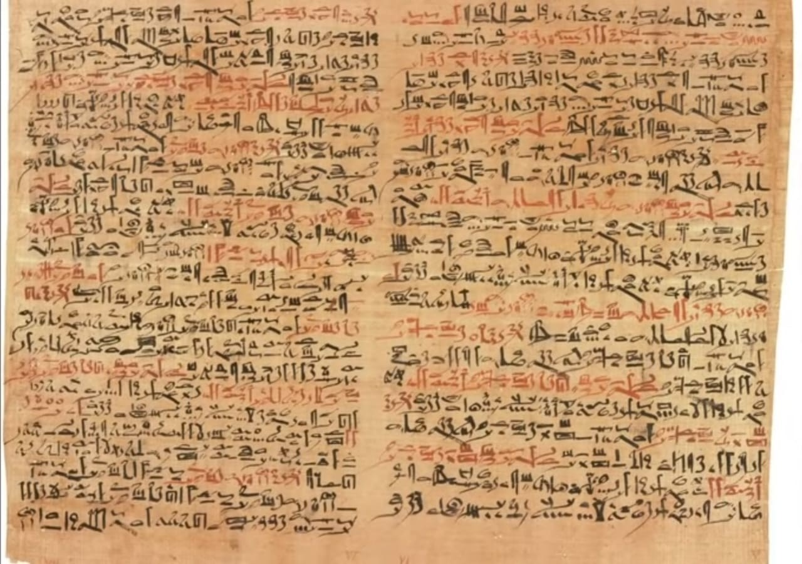
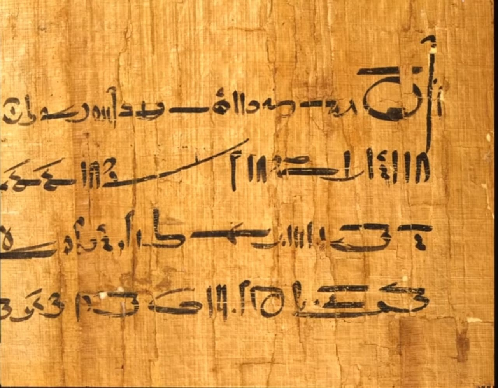
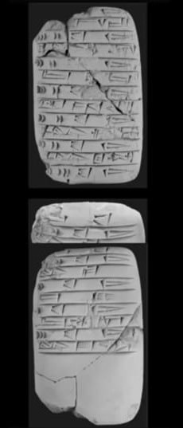
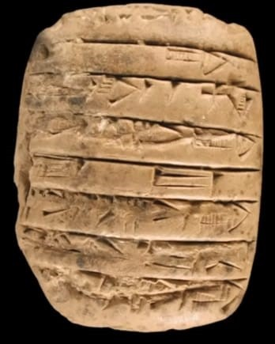
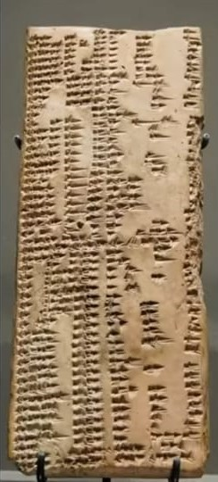
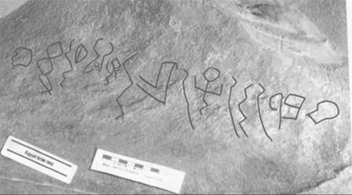
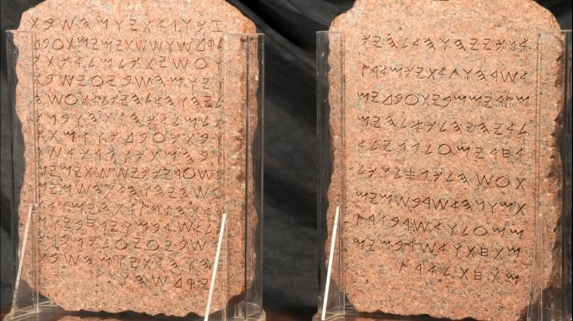

Imagine Abhirup has an idea, and he wants to share it. There are so many ways to share an idea. He could draw a picture, make an engraving, write a song, or send a telegraph or an email. But how are these things different? And more importantly why are they the same?
The Fundamental Building Blocks
This story is about a fundamental particle of all forms of communication. It begins with a special skill you likely take for granted i.e. Language. All language allows you to take a thought or mental object and break it down into a series of conceptual chunks. These chunks are externalized using a series of signals or symbols.
Humans express themselves using a variation in sound and physical action, as do chirping birds and dancing bees. And man-made machines exchange a dancing stream of electrical vibrations. Even our bodies are built according to instructions stored inside microscopic books known as DNA. All are different forms of one thing i.e. INFORMATION.
How to Measure Information
Information is what allows one mind to influence another. It’s based on the idea of communication as selection. Information, no matter the form, can be measured using a fundamental unit, in the same way, we can measure the mass of different objects. Using a standard measure such as kilograms or pounds. This allows us to precisely measure and compares the weight of objects. Say, rocks, water, or wheat using a scale. Information can be measured and compared using a measurement called Entropy. Think of it as an information scale. We intuitively know that a single page from some unknown book has less information than the entire book. We can describe exactly how much using a unit called a bit, a measure of surprise. So, no matter how Abhirup wants to communicate a specific message. Hieroglyphics, music, and computer code, each would contain the same number of bits, though in different densities. And a bit is linked to a very simple idea. The answer to a yes or no question. Think of it as the language of coins.
So how is information measured? Does the information have a speed limit? A maximum density?
Information Theory holds the exciting answer to these questions. It’s an idea over 3000 years in the making. But before we can understand this, we must step back and explore perhaps the most powerful invention in human history i.e., the Alphabet and for this, we return to the cave.
Informally we can think of information as some message, stored or transmitted using some medium. When you paint you are representing your message using a continuous pattern with a seemingly endless number of possible forms. You’re free to express yourself. When humans began developing writing systems, we naturally had to divide our world into a finite number of atomic units which we express using symbols. Any written language can be thought of in this way. Messages are formed by arranging symbols in specific patterns.
Looking back at History
Let’s return to 3000 BC and explore two ancient writing systems. First, in ancient Egypt, we had Hieroglyphics, a priestly form reserved for governmental, fiscal, magical, and religious purposes. It was practiced by select few writers known as scribes and writing was generally unintelligible to the common people.

The symbols themselves broadly fall into two categories namely word signs, which are symbols that represent a single meaningful concept. And sound signs represent chunks of sound. Now, the total number of different symbols in common use was over 1500 and if you divide all these symbols into word signs and vs. sound signs, we find a much smaller portion of sound signs. There were around 140 sound signs, and of these, only 33 represented distinct consonants, a tiny fraction of all the symbols in use. At the time, the medium used to store the symbols was primarily rock, and this was ideal for durable inscriptions, allowing messages to travel into the future. Mobility was not the main concern when communicating messages in this way. However, a new physical medium for storing symbols was emerging at the time. Along the Nile, silt deposits left from flooding made the surrounding land extremely fertile, and one of the many crops they grew was Papyrus.
It could be sliced into strips and these strips were then soaked, weaved together, and finally pressed, allowing the natural sugars to act as glue. After several days, it dried and formed an almost weightless tablet. This medium was ideal for sending messages across greater spaces, rather than the more durable inscriptions focused on time. This shift towards cheap portable mediums for storing symbols coincides with the spread of writing into the hands of more people for new purposes. Gradually people began to write more on Papyrus, the symbols involved to suit rapid writing This led to a cursive script, known as Hieratic.

For example, here is the world’s oldest surviving surgical document. It’s written in Hieratic script, dated to around 1600 BC. These symbols were based on Hieroglyphics; however, the picture was simplified to match the swiftness of writings in ancient shorthand. Also, the number of common symbols in use began to shrink down to around 700. By escaping from the heavy medium of stone, thought gained lightness.

A marked increase in writing by hand was accompanied by the secularization of writing, thoughts, and activity. This led to a new writing system called Demotic around 650 BC, which was devised specifically to facilitate the ease of rapid writing.

For example, this text is known as the marriage contract and is one of the earliest known examples of Demotic script. It is interesting to notice that there was a dramatic reduction again in the total number of symbols with this new system, roughly 10 percent of the total number of symbols used before. This was due to a shift towards the use of phonetic symbols, or sound signs ‘Be’, and ‘Ze’. Overword symbols, or meaning signs. And the new simplicity meant that children could be taught to write at a young age. We see this same pattern in other cultures Let’s return to 3000 BC and visit Mesopotamia, where Cuneiform was the writing system originally used for fiscal purposes, as it was a powerful method of tracking debt and surplus commodities before the invention of coins.

For example, here is a document recording someone’s stock of animal hides, and this type of writing evolved to suit other needs. This tablet contains a recipe for bread and beer, and here’s another tablet given below which contains a legal document.
Originally, the writing system was used by the Sumerians, and there were over 2000 different symbols in use, which could also be divided into words and sound signs. Akkadian gradually replaced Sumerian as the spoken language, here is the earliest known dictionary from 2300 BC. It contains word lists in Sumerian and Akkadian, and this was discovered in modern Syria.

When it was adopted by the Akkadians and fitted to their language, they reduced the number of symbols to around 600, and they did this again by moving toward sound signs. Again, we see both Hieroglyphics and Cuneiform using several hundred sound symbols in their more involved forms, and the writing system escaped their formal usage and spread to more and more people, the soil was ripe for the invention of a brand-new writing system for the people. One of the great discoveries in the history of writing dates to around 1700 BC. The Sinai inscription was found in the Sinai Peninsula, and they were about 20 feet apart.
This was important because each picture denotes a consonant sound, and no word signs are used. When sounded out correctly, the letters would produce words in ancient Semitic. Although not fully deciphered, this message appears to be in the form, of “name, rank, and prayer”. The two words deciphered are “Chief” and “God”.

This innocent example was part of a writing revolution, creating meaning by merging sound signs only. By 1000 BC, we arrive at the Phoenician Alphabet, which emerges along the Mediterranean used by the Phoenicians who are maritime trading culture.
The Phoenician writing system was based on the principle that one represents one consonant, and it was used to write a northern Semitic language, containing only 22 symbols in total. The symbols chosen to represent these sounds were often borrowed from Hieroglyphics pictures so that the letters’ names began with the letter’s sound. For example, mem, which stood for water, became what we know of as the letter ‘M’. Aleph, which stood for ox, became what we know of as the letter ‘A’, but the secret power of the alphabet, unknown to its inventors, was that it did not need Semitic speech to work.

With modest adjustments, these miraculous letters would be fitted to diverse tongues of Europe, India, and Southeast Asia carrying literacy around the globe. This was the source of the Greek and later Roman alphabet forms we know today.
Collection of Possible Symbols
The idea of an alphabet is a powerful method for transmitting and storing information. Realize, that it does not matter what the symbols are. Or how you choose them, or even what language it’s in, information is just a selection from a collection of possible symbols. And over time, we’ve always looked for faster, more efficient ways of transporting information across greater and greater spaces, and when we try doing this using new mediums, which travel faster than any human or animal, an engineering problem presents itself.
Reference:
INFORMATION THEORY AND THE DIGITAL AGE by AFTAB, CHEUNG, KIM, THAKKAR, YEDDANAPUDI
Chiu, Eugene, et al. “Mathematical Theory of Claude Shannon.” 13 December 2001.
Committee in Communication Sciences at the University of Michigan. Summary Report of the Program in Communication Sciences at the University of Michigan. April 15, 1960.